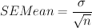

The standard error of the mean, or the standard deviation of the sample means, is calculated by dividing the standard deviation by square root of the sample size.

where σ is the standard deviation and n is the number
of nonmissing observations.